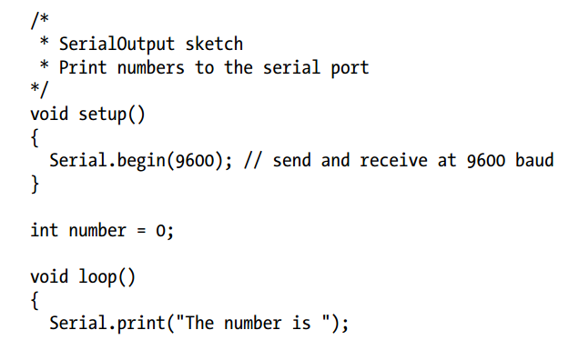
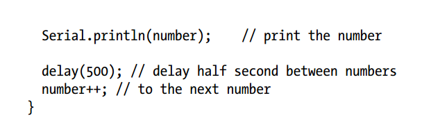
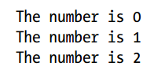

Communicate with your Arduino
You want to send text and data to be displayed on your PC or Mac using the Arduino IDE or the serial terminal program of your choice.
 Connect Arduino to your computer just as you did and upload this sketch. Click the Serial Monitor icon in the IDE and you should see the output displayed as follows:
